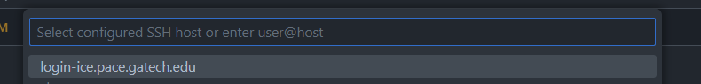

title: Guide to Slurm and the PACE cluster
author: Moises Andrade
year: 2024Guide to Slurm and the PACE cluster
Author: Moises Andrade
PACE is a remote cluster of machines, using the slurm system to allocate resources (CPUs, GPUs, memory, etc) and schedule jobs (e.g.: a train.sh script). This means that most of the workflow requires a secure (ssh) connection and is done via the terminal.
- Connect to PACE via the terminal and
VSCodessh extension. - Find/create the
scratchdirectory to store large files and install python packages/environments to avoid issues with storage quota. - A step-by-step example of a typical workflow in
slurmconsidering an interactive job, creation of Python environments inscratch, installation of packages, and elucidation on typicalslurmterms and options.
Additionally, see:
* ICE offers a visual interface alternative via Open OnDemand , but I'd still recommend using the terminal and VSCode. It is pretty convenient once you get used to it, visual interfaces are not available for all slurm-based clusters, and terminal instructions will be needed anyway for batch jobs, conda installation, etc.
1) Connecting to PACE
For any of the following, first connect to GT VPN via GlobalProtect. This linkhas instructions and links to download specific software to connect to VPN
Connecting to PACE via terminal
- Use the following command to connect to PACE via
ssh. This will ask for a password. Use same you used to login into canvas, BuzzPort, etc.
ssh <gtid>@login-<cluster>.pace.gatech.edu
# Example:
ssh mandrade9@login-ice.pace.gatech.edu
If you are not familiar with ssh and want to learn more, there are plenty of good tutorials on the web (example)
You can proceed to (2) for the slurm workflow. The following two sections are optional (though highly recommended)
Passwordless SSH Connection (Optional)
Follow the steps below to avoid entering a password every time you run the ssh command or connect via VSCode ssh extension. These steps should work for Linux, MAC and Windows (use PowerShell or the Terminal app).
- Generate an SSH key. This will ask for a location, passphrase, etc. You can just press enter; no need to input anything.
ssh-keygen -t rsa
The following two steps will ask for a password; use the same you use in Buzzport.
- Create a directory in the remote machine to hold ssh keys
ssh mandrade9@login-ice.pace.gatech.edu mkdir -p .ssh
- Append the
sshkey from local machine to the remote machine authorized keys
cat .ssh/id_rsa.pub | ssh mandrade@mandrade9@login-ice.pace.gatech.edu 'cat >> .ssh/authorized_keys'
Connecting to PACE via VSCode (Optional)
Connecting to PACE via VSCode is recommended if you use the IDE. It gives an experience similar as if you were coding in your local machine, and provides the convenient features from VSCode such as code highlighting, a visual file explorer, integrated terminal sessions pointing to multiple nodes, etc.
NOTE: before connecting via VSCode, ensure you are connected to GT VPN.
To connect with VSCode:
- Search for
sshin theextensionswindow and download this extension:

-
Open the command pallet (windows:
ctrl+shift+p, MACcommand+shif+p) and typessh. Select the option Remote-SSH:Connect to Host... -
Select
Add New SSH Host...then type the same command you would use in the terminal:ssh mandrade9@login-ice.pace.gatech.edu -
Enter your password (the same you use for canvas, buzzport, etc)
-
A new VSCode window like below should appear. The
ssh: login-ice.pace.gatech.eduin the left corner indicates you are connected to PACE.
The next time you try to connect as in (2), you will see something like below. That is, you don't need to enter ssh ... again. VSCode saves the ssh configurations for you.

(to check/change ssh configurations: command pallet + Remote-SSH:Open SSH Configuration File)
Useful features:
Two simple examples of convenient features of connecting via VSCode
One SSH, Multiple terminals
Using VSCode's integrated terminal, you can have multiple terminals pointing to different PACE nodes, with no need to ssh again. For instance, below one terminal points to an allocated node with GPU (left) and to the login node (right) (see Workflow in PACE to understand the difference)
GUI-based file navigation.
Clicking Open Folder to set the folder VSCode points gives a visual explorer of the folder selected, similar as in your local computer. For instance, the below will update the file explorer to show only the folders at the DL directory and make it my working directory.
Troubleshooting
When first connecting, you might face the error "VSCode Server could not be installed...". This can be caused by insufficient storage space for VSCode Server to install the necessary archives in your PACE home folder.
To resolve this, see Cleaning space if you run out of storage and What is the scratch folder and why use it
2) Using the scratch directory (IMPORTANT)
TLDR: make sure to always download models, big files and install python packages (including virtual environments) in your scratch directory.
Before installing Python packages, it's important to understand some details about PACE's file system and storage. Otherwise, you may face storage quota issues, be unable to create new files, and have your workflow completely disrupted.
When you connect to PACE, you'll land on the home directory, which looks like below. Note these folders are available through any node.
In PACE, you have only 15GB of storage in the home directory and all of its subdirectories, except for scratch. In the scratch folder you have 300GB. See here for more details.
- Note from the link:
scratchis not backed up, and at the end of each semester, all files inscratchnot touched in 120 days are deleted.
This means I'd exceed the storage quota and be unable to create any other file (and to work) if I download a big model to the DL folder, or run pip3 install pytorch a couple times, since by default package managers will not use the scratch directory.
Find/Create the scratch directory
Use pace-quota to find the location of your scratch directory
[mandrade9@login-ice-3 ~]$ pace-quota
# Output:
# Filesystem Usage (GB) Limit
# Home:/home/hice1/mandrade9 21.3 30.0 70.9%
# Scratch:/storage/ice1/9/2/mandrade9 50.7 300.0 16.9%
You can create a scratch folder in your home directory and link it to the path above.
mkdir ~/scratch
ln -s /storage/ice1/9/2/mandrade9 ~/scratch
Now use ~scratch or /storage/ice1/9/2/mandrade9 to store big files and install python environments.
3) SLURM and Workflow in PACE
PACE's use the slurm system to allocate resources (CPUs, GPUs, etc) and schedule jobs (e.g.: a train.sh script).
The typical slurm workflow goes as follows:
-
sshinto PACE (as in (1)) -> request an interactive computing node -> load necessary software ('modules') -> run your code -
sshinto PACE, queue (batch) jobs to computing nodes.
Translation:
-
Interactive node: this gives you access to a machine (via terminal) to run commands on the fly.
- Example, you can run
python gen_images.py, see the results in your terminal / folders, change code, run again
- Example, you can run
-
Queue batch jobs: put a script on a queue to be executed by
slurmwhen resources are available.- Example: schedule a
train.shscript to run. You don't interact with the terminal here; results will be available in log files /folders you specify. - This is useful when more time/resources are needed. See (6) for more.
- Example: schedule a
Below section describes case (1), specifically how to install packages and run python using anaconda and the scratch folder. Nonetheless, even if you using batch jobs, it is useful to read the below for the initial setup and get used to the workflow.
1) Requesting an interactive node
When you log into PACE, you will receive a terminal pointing to a "login node", like below:
~ ssh mandrade9@login-ice.pace.gatech.edu
[mandrade9@login-ice-3 ~]$
The login node has little not computing power and is accessed by many people at once. You should not execute heavy programs on it, or else performance for all users may be affected!
To run heavy programs, you should request a computing node, like below:
salloc -N1 -t0:15:00 --cpus-per-task 8 --ntasks-per-node=1 --gres=gpu:V100:2 --mem-per-gpu=32G
In this example, I requested:
- one computing node (
-N1) - for 15 minutes (
-t0:15:00) - With 8 CPU cores (
--cpus-per-task) - With two V100 GPUs (
--gres=gpu:V100:2), with 32GB of memory each (--mem-per-gpu=32G)
Notes:
- check hardware available to request here; details on
slurmoptions here,here. - For simpler use cases, you will mostly tweak the GPU and CPU specs relative to the command above.
- For more compute-intense jobs, you may want a distributed and multi-GPU solution, which requires more tweaking. Check this guide on PyTorch DDP with
slurm.
The terminal should point to a computing node now, like below.
This means you have access to a machine with the specs above. Executing nvidia-smi you can confirm details of the GPUs provided:
2) Loading software/modules
The computing nodes initializes with the bare minimum of software. You have to load them to do any work.
PACE has commonly used programs pre-installed. You can "load" these modules via the command:
module load <module_name>
To find which software is available and their identifiers, use the spider command:
module spider <partial_module_name>
For example, to see which versions of anaconda are available:
This tells that I can load anaconda via:
module load anaconda3/2022.05.0.1
NOTE: software versions are not the same among PACE nodes.
- For instance, if you request a
A100 GPUyou may receive a node with onlycondaversions 2023+ - This gives a little headache when using different nodes, which is not so rare, as not always the same nodes are available.
- For
anacondain particular, I tend to create one environment for each node to avoid problems.
3) Creating a virtual environment in the scratch directory and installing python packages
- Load the anaconda module
module load anaconda3/2022.05.0.1
- Create the virtual environment in your scratch directory and activate it.
Obs.: Do not continue if you don't know what is the scratch directory. Go to (2) first.
conda create --prefix ~/scratch/<envName> python=<3.x>
conda activate ~/scratch/<envName>
All environment files will be saved in ~/scratch/<envName> instead of the default directory ~/.conda
Alternatively, you can set as conda default to store packages in specific directories inside scratch with the commands below. config will add the paths to the ~./condarc file and you don't need to run it again.
# Change conda default path to save env files
conda config --add envs_dirs ~/scratch/conda_venvs
conda config --add pkgs_dirs ~/scratch/conda_pkgs
# Create environment
conda create -n vlm python=3.11
conda activate vlm
- Install your packages.
Typical packages
pip3 install numpy
For PyTorch, there is one additional step:
(i) Check and load CUDA module:
module spider cuda
# Output: [...]
# Versions: # cuda/11.8.0 # cuda/12.1.1
module load cuda/11.8.0
(ii) Check Pytorch's website for the appropriate command. In this case (Linux, Pip, CUDA11.8):
pip3 install torch torchvision torchaudio --index-url https://download.pytorch.org/whl/cu118
NOTES
(i) You can confirm CUDA is loaded and it's version with nvcc --version
nvcc --version
# nvcc: NVIDIA (R) Cuda compiler driver
# Copyright (c) 2005-2022 NVIDIA Corporation
# Built on Wed_Sep_21_10:33:58_PDT_2022
# Cuda compilation tools, release 11.8, V11.8.89
# Build cuda_11.8.r11.8/compiler.31833905_0
- You can also use Python to check CUDA and GPU availability:
import torch
torch.cuda.is_available() # True if any CUDA device ready for use
# > True
torch.cuda.device_count() # Number of CUDA devices ready for use
# > 2
(ii) I tend to use pip3; using conda in slurm caused bugs for me in the past.
(iii) It is good to check if pip is pointing to scratch folder with which pip3 before installing anything. If it is not, check the troubleshooting section below
$ which pip3
~/scratch/VLM_project/bin/pip
Troubleshooting
Sometimes slurm messes up the venv locations. If pip3 does not point to scratch, try activating and deactivating the environment and/or reload the anaconda module:
# activate and deactivate the env
conda deactivate
conda activate /home/hice1/mandrade9/scratch/VLM_project
which pip3
# and/or unload and load the module again
module unload anaconda3/2022.05.0.1
module load anaconda3/2022.05.0.1
conda deactivate
conda activate
# Sometimes anaconda is loaded automatically in the node; deactivating and activating can avoid some bugs
- If still not pointing to scratch, the safest way to avoid problems is deleting the environment and reloading
conda. Then creating the environment again following 1-2
conda deactivate
conda remove --name /home/hice1/mandrade9/scratch/DL_project --all
module purge
# (this will remove all modules loaded; just to be sure)
module load anaconda3/2022.05.0.1
conda deactivate
conda activate
4) Cleaning space if quota exceeded
If you face errors like user quota exceeded or bugs like VSCode refusing to connect due to an error installing VSCode server, this is probably due to exceeding storage quota in PACE.
- Read the 2) Using the scratch directory (IMPORTANT) section!
A first thing you should try is cleaning all conda and pip caches:
conda remove -n <env_name> --all # clean a specific environment
conda clean --all rm # clean all environments
-rf ~/.cache/pip
If this doesn't work, you can also delete the whole .conda folder. Don't worry, this will not break anything.
rm -r ~/.conda
More generally, you can search large files with the command below, and delete them accordingly. This should point out large files in .conda too.
find ~ -type f -size +100M
For a more compact view, you can check directory sizes with the below command.
du <directory_path> -h --max-depth=1
5) Summary of commonly used SLURM commands
Check this cheatsheet and PACE documentation for more commands and instructions.
Request interactive node with specific hardware
salloc -N1 -t0:15:00 --cpus-per-task 8 --ntasks-per-node=1 --gres=gpu:V100:2 --mem-per-gpu=32G
- one computing node (
-N1) - for 15 minutes (
-t0:15:00) - With 8 CPU cores (
--cpus-per-task) - With two V100 GPUs (
--gres=gpu:V100:2), each of which with 32GB of memory (--mem-per-gpu=32G)
Loading software/modules:
List modules that match a partial name:
module spider <partial module name>
# e.g.: module spider anaconda
Load, unload, purge modules:
module load <module_name>
module unload <module_name>
module purge # unload all modules
Moving data in/out slurm:
Copy local files to slurm
scp -r local1 local2 mandrade9@login-ice.pace.gatech.edu:~/scratch/slurm_folder
Copy from slurm to local
scp -r mandrade9@login-ice.pace.gatech.edu:/home/hice1/mandrade9/scratch/project/data ./local_folder
Queue a batch script for execution
sbatch myscript
Visualize all queued jobs for a user
squeue -u <username> # e.g.: squeue -u mandrade9
# Also:
sacct -u <username> # e.g.: sacct -u mandrade9
Cancel a queued job:
scancel <job_id>
6) Submitting batch jobs
For tasks that require more time and compute, you may have to submit jobs for SLURM to allocate resources when they are available. In these cases, the typical workflow is as follow:
- write a bash script specifying the resources and how to run your code. A sample script is below. Notice the first few lines specify the machine specs desired to run the job, similar as when allocating an interactive node.
#!/bin/bash
#SBATCH --job-name=my_job # name for your job
#SBATCH --nodes=1 # number of nodes
#SBATCH --ntasks-per-node=1 # number of processes per node
#SBATCH --cpus-per-task=64 # number of CPU cores
#SBATCH --time=00:15:00 # total run time limit (HH:MM:SS)
#SBATCH --gres=gpu:V100:1 # one v100 GPU
#SBATCH --mem-per-gpu=12G # 12G of GPU memory
#SBATCH -o ./slurm_outs/slurm_%j.out # file to write logs, prints, etc
#SBATCH --mail-type=begin # send email when job begins
#SBATCH --mail-type=end # send email when job ends
# Some code to run, like
module purge
module load anaconda3/2022.05.0.1
conda activate ~./scratch/vlm
srun python3 mycode.py
# Or any other thing. Example below runs a OpenMP cpp code:
cores=(1,2,4,8,16,32,64)
export OMP_PLACES=cores
for c in "${cores[@]}"
do
n=$((base_n * c))
export OMP_NUM_THREADS=$c
# if c is 1, then run the serial version
if [ $c -eq 1 ]
then
output=$(./build/serial -n $n -s 1 -bs $bs)
else
output=$(./build/openmp -n $n -s 1 -bs $bs)
fi
sim_time=$(echo $output | awk -F' = ' '{print $2}' | awk '{print $1}')
echo "$n, $bs, $sim_time, $c" >> $filename
done
- Queue the script for execution with the command
sbatch myscript. You can run this from the login node.
NOTE: different from salloc, you will not receive an interactive terminal to run commands and see outputs on the fly. You can check slurm logs on file/folders specified in #SBATCH -o ./slurm_outs/slurm_%j.out. This is useful to check prints, failures; etc.
Use the commands below to check queued jobs status, cancel jobs, etc.
# Check job IDs and status
squeue -u <username>
sacct -u <username>
# Cancel a submitted job
scancel <job_id>
7) Useful links
PACE links:
Using SLURM:
- Guides: PACE link , USC guide
- srun vs sbatch: stack overflow
- nodes vs ntasks vs cpus-per-task: Stanford FAQ, Princeton Scaling Analysis guide
Useful references if you are dealing with large models
Multi-GPU training/inference
Quantizing and loading quantized models with trasnformers library: link
8) ICE Open OnDemand.
ICE offers a web-based alternative to access PACE machines using a visual interface. The official guide can be found here.
Below are some instructions on how to upload files, submit jobs via the terminal, and open VSCode session using this feature.
Notes:
- The same steps outlined in sections (2) and (3) apply to this type of access too. It is just a different interface than your terminal or personal VSCode.
- This interface offers an alternative (and pretty convenient) way upload and move files compared to
scp
For all that follows, access the Open OnDemand dashboard here: https://ondemand-ice.pace.gatech.edu/pun/sys/dashboard/
Upload files
- click on
files -> home directoryand upload your local files with theuploadbutton.
Run jobs interactively via Terminal and Desktop app
Terminal interface
- On the dashboard, click on
clusters -> ICE Shell Access
Desktop interface
This provides a desktop-like view with interactive access to the computing node resources (like salloc1 but with a desktop too)
- On the dashboard, click on
clusters -> interactive apps -> interactive Desktop - Choose the cluster (ICE), and hardware desired for the computing node
- Click on launch
Run a VSCode session:
This provides a VSCode session with interactive access to the computing node resources (similar to the ssh via VSCode as in (1))
- On the dashboard, click on
clusters -> interactive apps -> VS Code - Choose the cluster (ICE), hardware desired for the computing node, and the modules to load.
- Click on launch